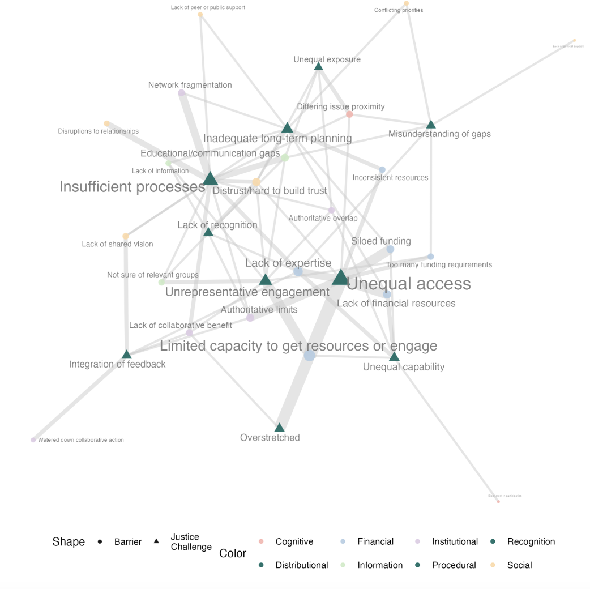
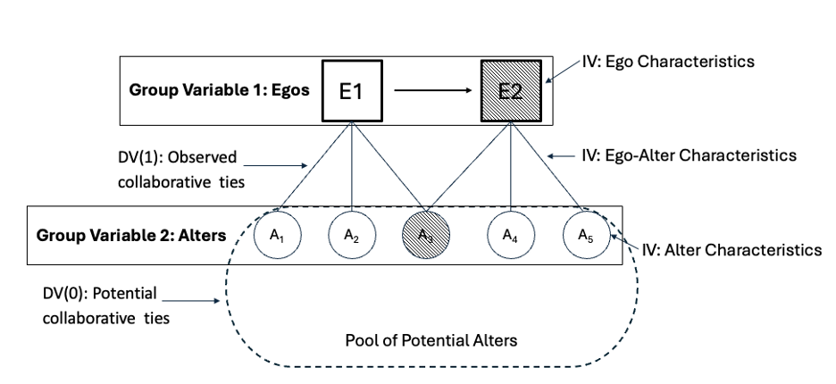
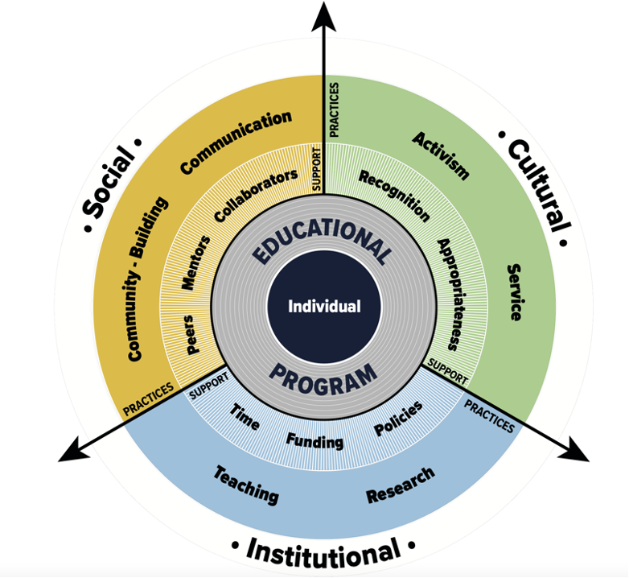
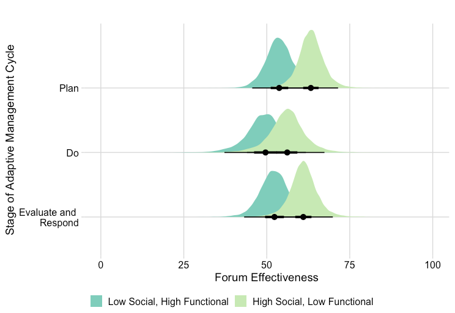
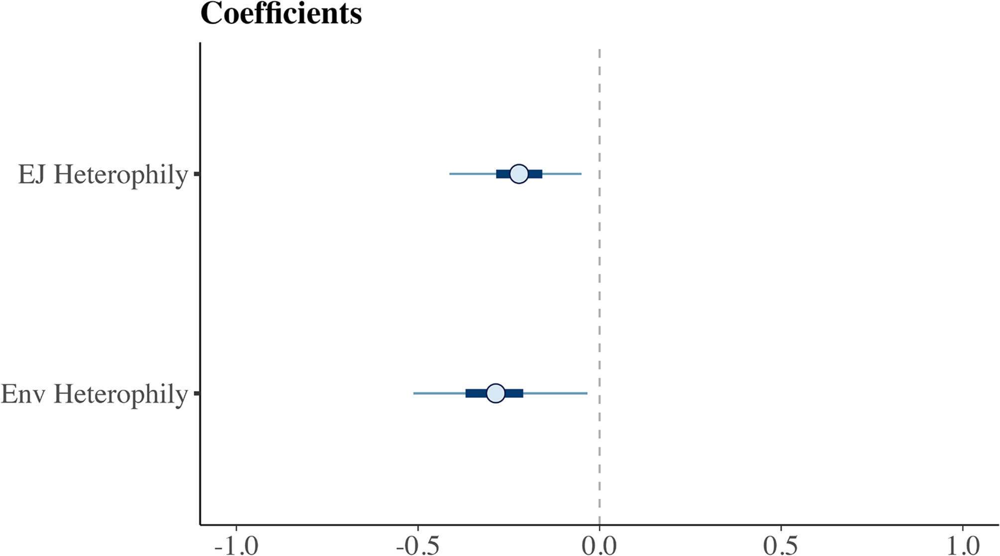
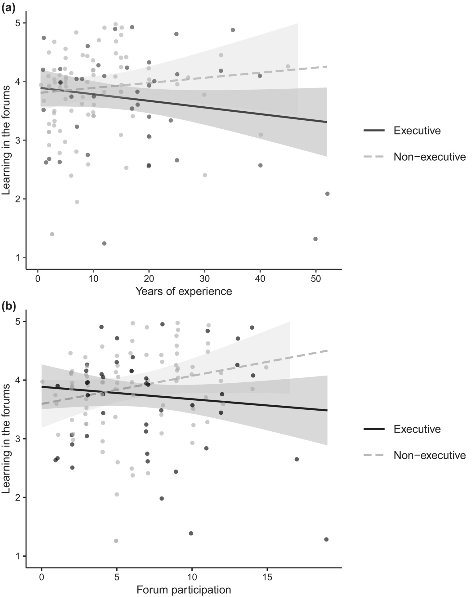
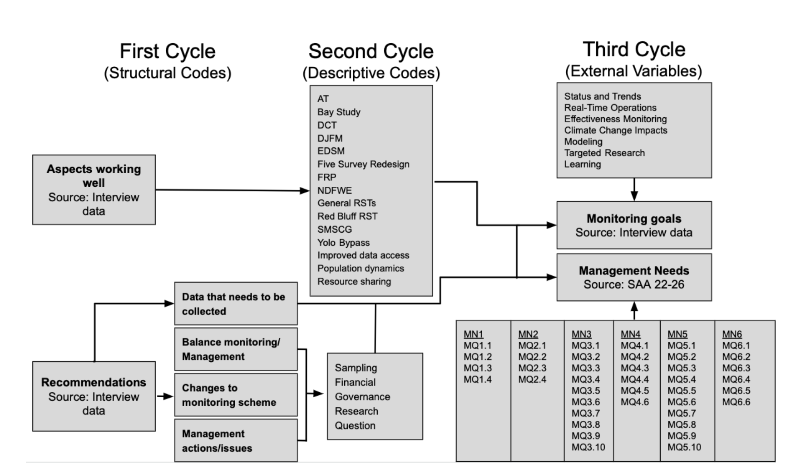
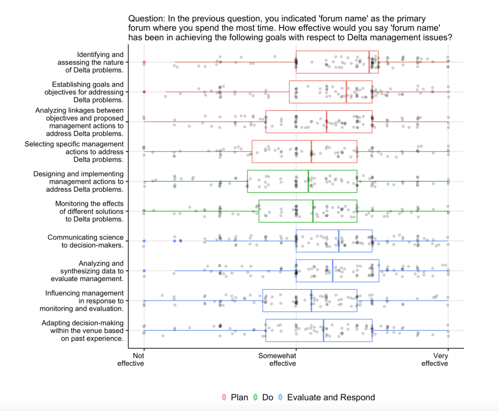
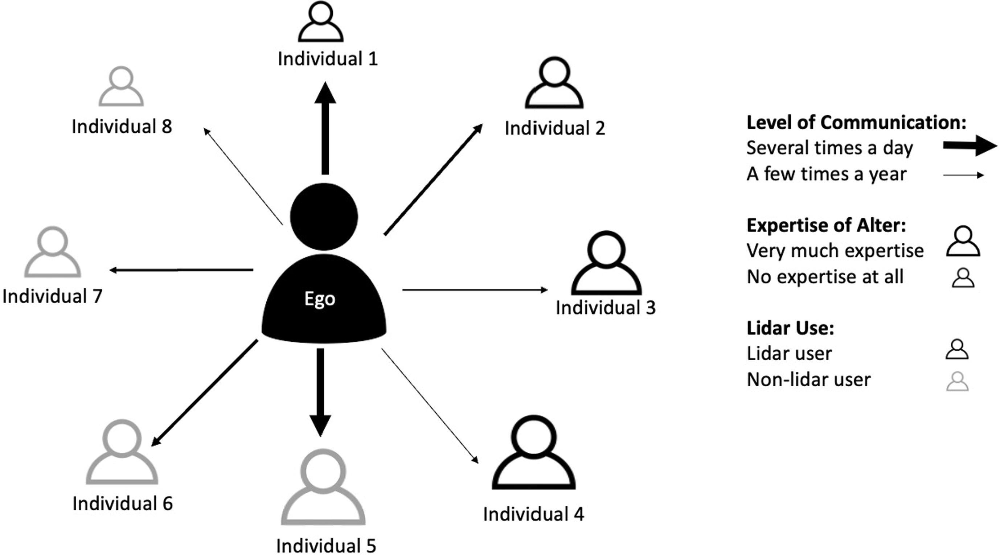

Publications and Reports
Collaborative governance of climate adaptation in the California Delta

Strategies for effective adaptation planning in the California Delta

Leveraging Partnerships in the Environmental Justice Movement: A Case Study in the California Delta

Developing a Theory of Change for Integrating Equity into Climate Change Graduate Education.

Learning through Adaptive Management in the California Delta Science Enterprise

Nascent policy subsystems in polycentric governance networks: The case of sea-level rise governance in the San Francisco Bay Area

Knowledge is not power: Learning in polycentric governance systems

Evolving the monitoring enterprise to meet adaptive management needs in the California Delta

Governing the Delta Science Enterprise: Results from a Stakeholder Survey

Social networks impact flood risk mitigation behavior: A case study of lidar adoption in the Pacific Northwest, US
No matching items